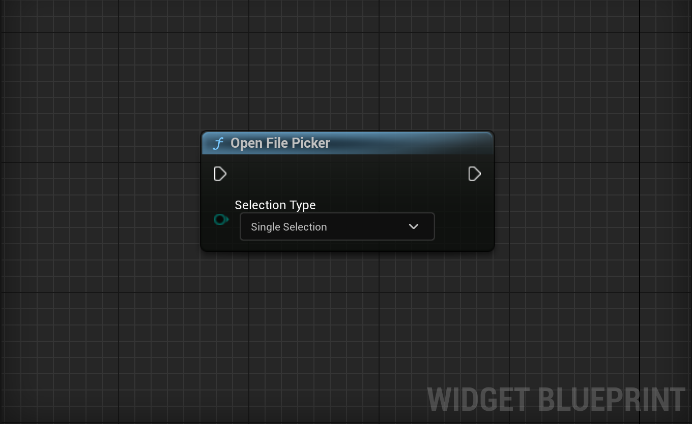
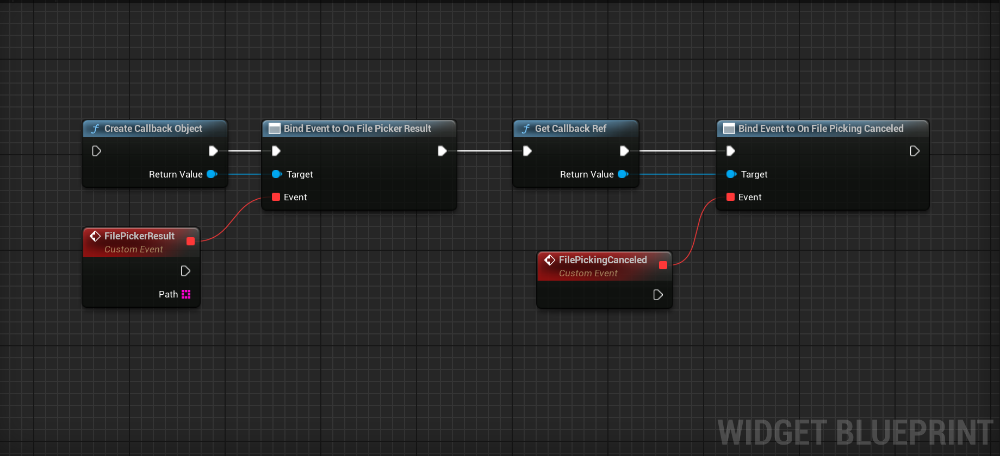
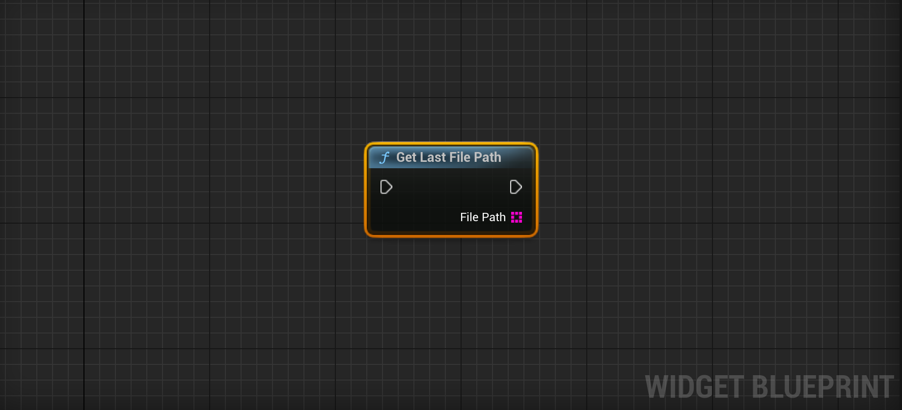
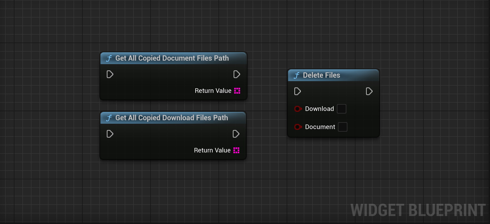

ANFP Eco Tutorial
In this tutorial there are 2 sections. In the first section you will learn how to set up Android Native File Picker Eco for opening file picking dialog and how to retrieve paths in the next one.
Open File Picker
Retrieve File Path
These nodes should always be called before open file picker especially Create Callback Object blueprint node.
This node returns result of the last file picking session.
Using these nodes, you can retrieve an array of strings containing the file paths of files copied from the Download and Document sections of the file picker. You can then reuse them or delete all at once using the Delete Files node.
You might wonder why these files are copied. This happens because some files are not directly accessible (due to restricted access on certain devices), so they need to be copied to the app's internal data path. The paths of these files are then returned using Event Dispatchers. With these nodes, you can easily manage those files.